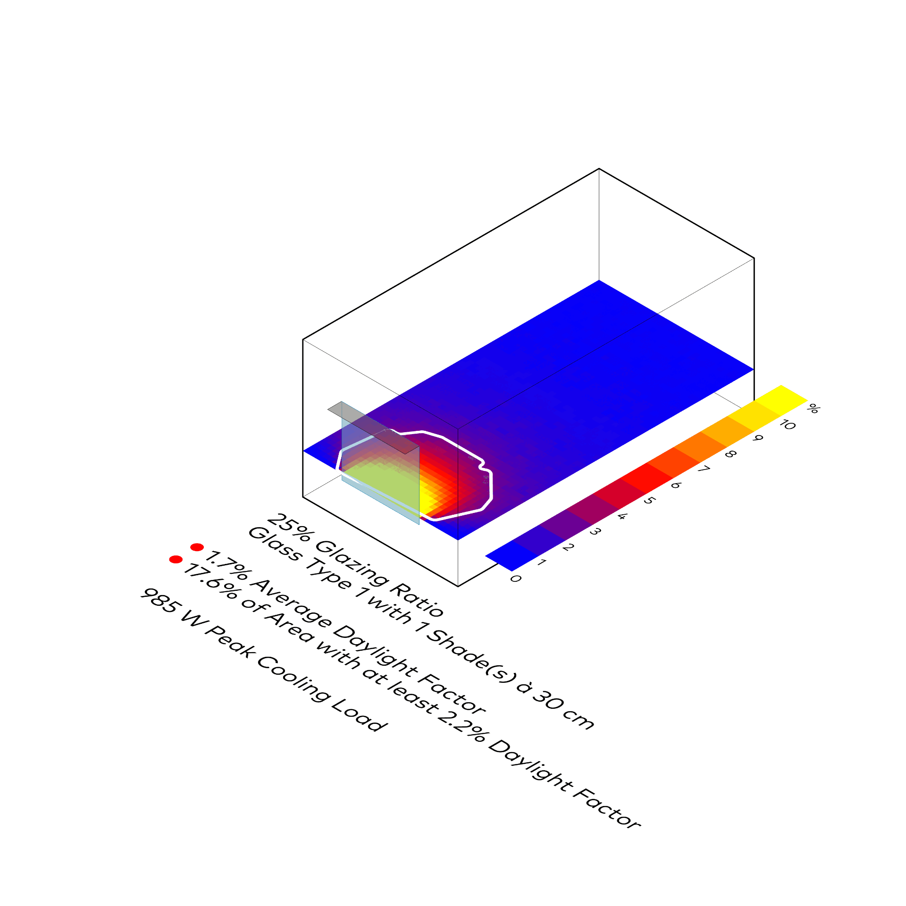
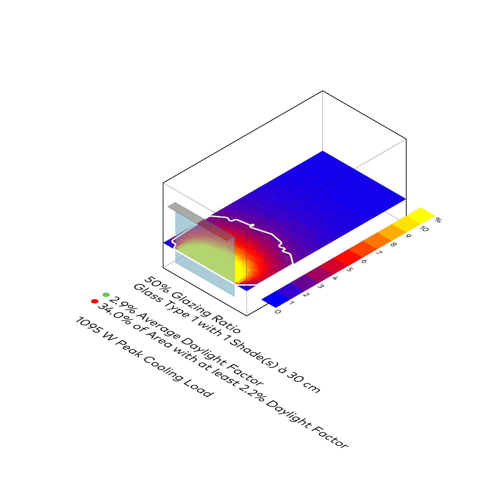
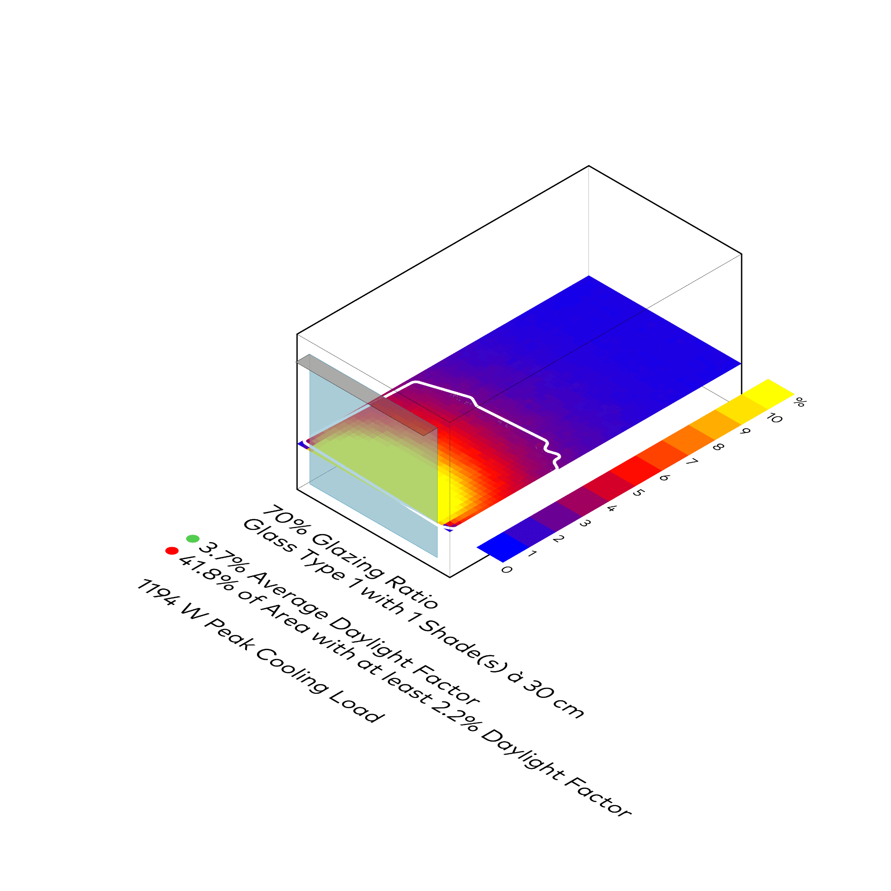

Fortgeschrittene Sonnenstrahlung
Honeybee
⬤ Honeybee simuliert inzidente Sonnenstrahlung (GHI, DNI, DHI) hochpräzise – Raytracing inklusive Reflexionen, Verschattungen, Umgebungsgeometrien. Räumlich aufgelöst für direkte, diffuse, reflektierte Anteile auf Fassaden/Dächern/Flächen. Jährliche Irradianz (kWh/m²) optimiert PV, Solarthermie, passive Strategien – Energiegewinne und Überhitzungsrisiken exakt.
⬤ Honeybee simulates incident solar radiation (GHI, DNI, DHI) with high precision – ray tracing including reflections, shading, and surrounding geometries. Spatially resolved for direct, diffuse, and reflected components on facades/roofs/surfaces. Annual irradiance (kWh/m²) optimizes PV, solar thermal, passive strategies – energy gains and overheating risks accurately.